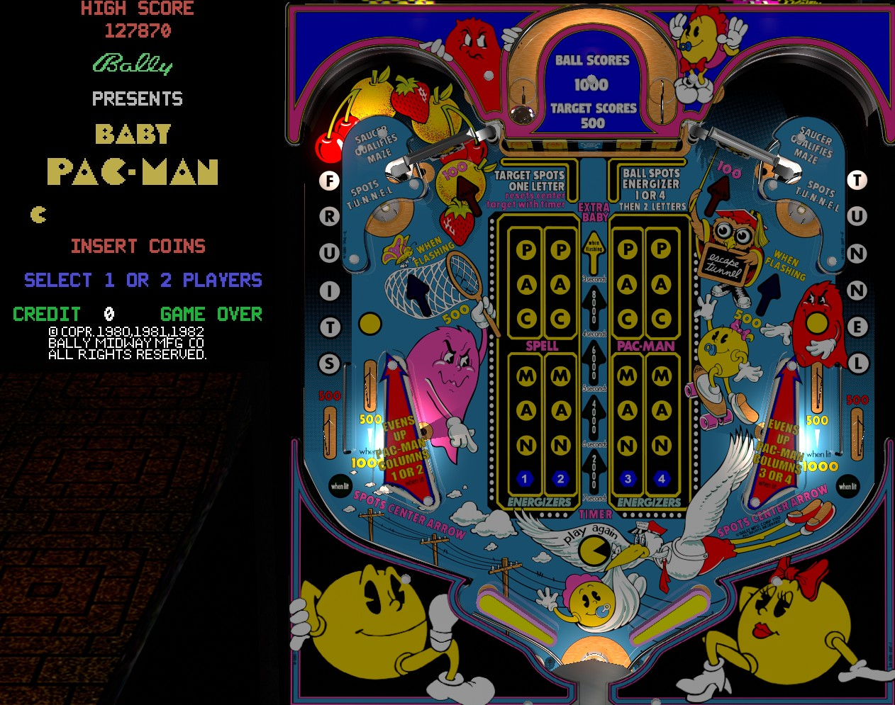

This is a hybrid video game/pinball machine that is not to be confused with Mr. and Mrs. Pac-Man Pinball (also Bally, 1982), which is entirely a pinball game.
Spend as much time in the pinball game as possible whenever you are given the opportunity. If one or more hatches at the bottom of the video game screen are open, use them to return to the pinball game. Shooting spinners or unlit saucers adds letters to Fruits, which increases the value of bonus items in the video game, or Tunnel, which increases Pac-Man's speed through the "warp tunnel" on the sides of the video game. Energizers, which let Pac-Man eat the ghost enemies in the video game, are earned at the rather dangerous center drop targets or near in lanes.
The below picture of Baby Pac-Man's pinball playfield and video game title screen was taken from the VPX recreation by 32assassin.

The start of any turn on Baby Pac-Man is in the video game. Like the regular Pac-Man arcade games, the goal of Baby Pac-Man's video game is to eat all of the dots on screen without running into any of the ghosts. Baby Pac-Man is moved in the four cardinal directions using the joystick on the front of the game. Touching a ghost loses one life, indicated by small symbols at the bottom of the game screen; your game is over when you run out of lives, regardless of how many times you started or drained out of the pinball game.
There are 3 mazes that Baby Pac-Man can traverse, but all three have the following features:
Especially if you are familiar with the original Pac-Man video games, observe the following notes about the ghosts' behavior:
Making the far left in lane, available by shooting the upper left spinner or having the ball roll up the left flipper with decent speed, adds a letter to Fruits. The upper left saucer also adds a letter to Fruits as well. Spelling Fruits advances which fruit is available in the video game. Unlike the classic Pac-Man games, the fruit is not advanced automatically each time a maze is cleared. Collecting a fruit in the video game scores:
The far right in lane or upper right saucer give letters in Tunnel. Spelling Tunnel increases the speed at which Baby Pac-Man travels when he goes through the warp tunnel in the video game. At level 1, he goes through the tunnel at normal speed. The speed can be increased up to level 8, which is ridiculously fast.
The upper left and right spinners score 10 points per spin, or 100 per spin when lit. Making the upper left saucer just once lights the upper left spinner for the rest of the game. The upper right saucer does the same for the right spinner.
Once a Fruit or Tunnel speed advance is earned, it is permanent for the rest of the game.
There are 5 drop targets in the center bank. The middle target is blue, while the other four are yellow and referred to from left to right as 1-2-3-4. Hitting a yellow drop target scores 500 points, resets the drop targets, and adds a letter to PAC MAN corresponding to that number. When PAC MAN is spelled, hitting that drop target again qualifies an Energizer, which will be available on the next trip to the video game. Energizers 1, 2, 3, and 4 are located in the top left, bottom left, bottom right, and top right of the game respectively.
There is a captive ball behind the drop targets. Knocking the captive ball from one side to the other scores 1,000 points and instantly qualifies Energizer 1 if the ball was hit from left to right, or Energizer 4 if the ball was hit from right to left. If the captive ball is on the left, drop target #1 will never stay raised, and if the captive ball is on the right, drop target #4 will never stay raised.
Making the upper left saucer once lights the near left in lane for the rest of the game. When not lit, the near left in lane scores 500 points. When lit, it scores 1,000, as well as: if drop targets 1 and 2 have the same number of PAC MAN letters lit, the lane will spot one letter for both of them, and if drop targets 1 and 2 do not have the same number of letters lit, the two will be "evened out" by advancing the less-progressed of the two until they are equal.
The value of the center blue drop target depends on how many arrows are lit in the column directly below it. When no arrows are lit, the target scores 500 points. Hitting the blue drop target, spelling Fruits or Tunnel, or completing a maze adds an arrow to this column. With just one arrow lit/flashing, the target scores 2,000 points, but it will lower itself after 7 seconds, and must be re-raised by hitting any other drop target. With two arrows lit or flashing, the target scores 4,000 points and lowers after 6 seconds. With three arrows lit or flashing, the target scores 6,000 points and lowers after 5 seconds. At 4 arrows, the target scores 8,000 points and lowers after 4 seconds. If all 5 arrows are lit or flashing, the target scores 10,000 points and an Extra Baby, but only remains standing for 3 seconds. Collecting the 10,000 and Extra Baby will unlight all arrows. Spotting an arrow by completing Fruits, Tunnel, or a maze will not award the target's point value, but will award the Extra Baby at the end of the sequence. The Extra Baby serves as one additional life in the video game, and once one is collected, another cannot be earned until at least one life is lost in the video game.
At the start of the game, Baby Pac-Man will be in the video game. No Energizers will be lit, and both of the lower exits to the pinball game will be open. From the pinball game, there are 2 ways to get back to the video game:
If you tilt during the video game, Baby Pac-Man instantly loses a life as though a ghost touched him. If you tilt during the pinball game, the flippers are locked, and a new session of the video game is started with the lower exits open and 1 life removed from the total. If you tilt during the name entry screen, your score is not forfeited, but your initials will automatically be set to TLT. There is no end of ball bonus awarded for draining out of the pinball game or losing a life in the video game.
By default, the warp tunnels are available at speed 1 and the Cherry is available from the start of the game. On hard settings, the video game's warp tunnels can be blocked until Tunnel is spelled once, and no fruits of any kind will spawn until Fruits is spelled once.
By default, all earned Energizers and all center drop target arrows are forfeited if you lose a life in the video game. On easy settings, these can carry over from one life to the next. If you complete a maze in the video game, any remaining Energizers are preserved for the next maze.